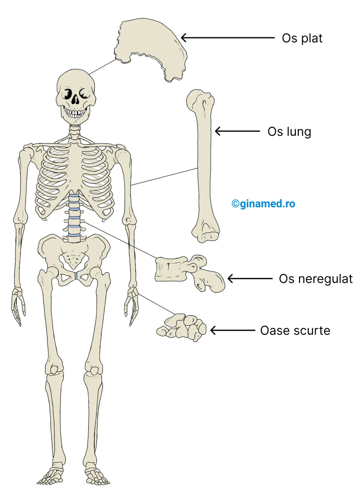
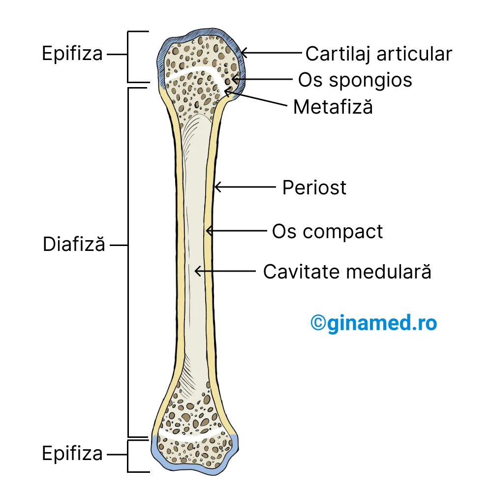
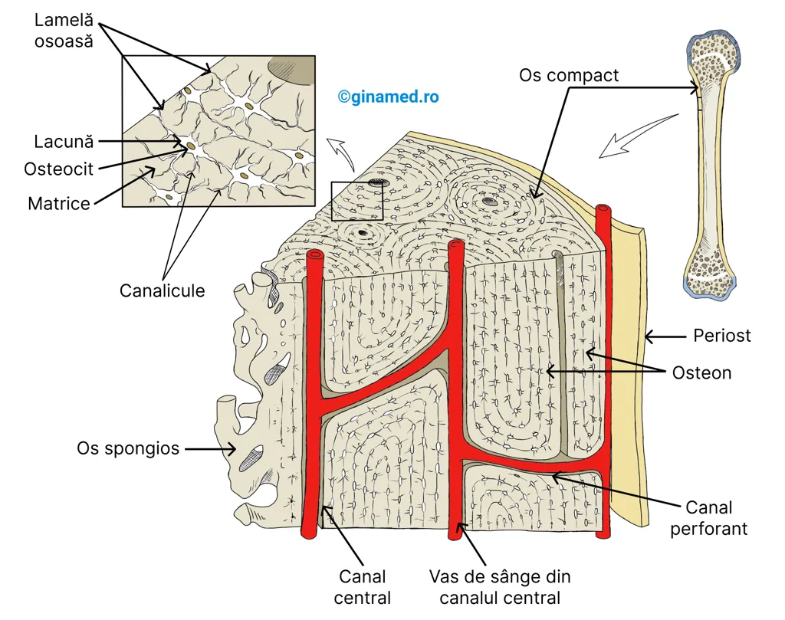
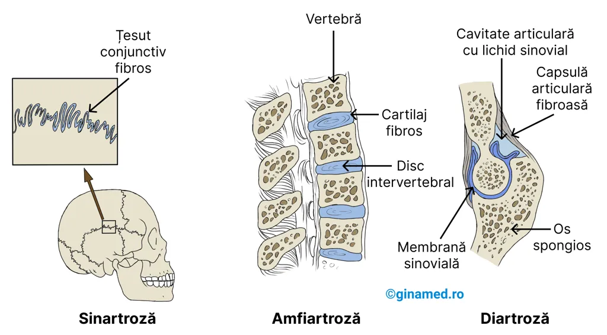

6.1. Introducere
Scheletul corpului uman este alcătuit din 206 oase, iar oasele au roluri mecanice, metabolice și hematopoietice.
1Funcțiile oaselor
Scheletul corpului uman este alcătuit din 206 oase.
Sunt funcții ale oaselor:
6.2. Osul
Osul este țesutul conjunctiv cu duritatea cea mai mare din organism.
1Alcătuire și proprietăți
Țesutul conjunctiv cu duritatea cea mai mare din organism este osul. În alcătuirea sa intră numeroase tipuri de celule, fibre de colagen și o substanță fundamentală densă, mineralizată, care îi conferă duritate.
Îndeplinirea funcțiilor osului necesită ca acesta să fie dur, rigid, dar totodată suficient de flexibil ca să permită îndoirea într-o oarecare măsură.
2Clasificarea oaselor
Criteriile de clasificare ale oaselor sunt forma și localizarea.
În funcție de formă
În funcție de formă, oasele se împart în:
| Tip | Alcătuire | Rol | Exemple |
|---|---|---|---|
| Oase plate | Două plăci subțiri de os compact între care se găsește o porțiune centrală formată din os spongios. | Protecția țesuturilor delicate ale encefalului și organelor toracice; conferă suprafață întinsă tendonului să se insere și astfel să se atașeze mușchiul. | Oasele craniului, omoplații sau scapulele, coastele, sternul, oasele pelvisului. |
| Oase lungi | Un ax, numit diafiză, și două capete, numite epifize. | Servesc drept pârghie. | Oasele din alcătuirea membrelor superioare, membrelor inferioare și degetelor. |
| Oase scurte | Au formă aproximativ cuboidală și apar în spații închise. | Suportă greutăți. | Oasele din alcătuirea încheieturii mâinii, adică oasele carpiene, și ale gleznei, adică oasele tarsului. |
| Oase neregulate | Au forme variate, complexe. | Loc de atașare pentru mușchi și rol în articulație. | Vertebrele, adică oasele coloanei vertebrale. |
Oasele wormiene, de la nivelul unor suturi craniene, și oasele sesamoide, dispuse la nivelul articulațiilor, de exemplu patelele sau rotulele, sunt oase neregulate.
Tipuri de oase.

În funcție de localizare
3Țesutul osos
Celulele formatoare de os se numesc osteoblaste și intervin în sinteza de compuși chimici care conferă osului duritate și flexibilitate.
Compusul principal din os este fosfatul de calciu, o sare minerală care se combină în cantități mici cu hidroxid de calciu și carbonat de calciu.
Fosfatul de calciu constituie componentul principal din hidroxiapatită. Cristalele de hidroxiapatită intră în alcătuirea osului, îi oferă duritate și sunt înglobate într-o matrice formată din fibre de colagen.
4Structura oaselor lungi
Exemplele cele mai des folosite de oase lungi sunt femurul și humerusul.
Osul lung se compune din diafiză, adică porțiunea dreaptă și lungă, și epifize, adică cele două capete ale osului.
Osul se compune din:
- diafiză - porțiune dreaptă, lungă;
- epifiză - capetele osului.
Structura unui os lung.

Placa epifizară este o zonă activă de cartilaj care apare la joncțiunea dintre diafiză și epifiză, zonă denumită metafiză, în perioada în care osul este în creștere.
Prin depunerea de cartilaj la nivelul acestei plăci, capetele osului se îndepărtează și astfel osul crește în lungime. Apoi, cartilajul este înlocuit cu țesut osos.
5Cartilaj articular, periost și os spongios
Fiecare epifiză prezintă la extremitate un strat subțire de cartilaj hialin denumit cartilaj articular. Acesta oferă o suprafață care intervine în deplasarea fără frecare a oaselor adiacente.
Zonele lipsite de cartilaj articular ale osului lung sunt acoperite de țesut conjunctiv numit periost. Periostul se întâlnește la nivelul diafizei, pe care o acoperă.
Porțiunea externă a epifizelor este formată de către os compact, iar la interior se află os spongios.
Osul spongios, cu o densitate mai scăzută decât osul compact, este alcătuit din:
- o rețea de structuri osoase întretăiate - trabecule sau travee;
- spații cu măduvă roșie distribuite printre trabecule sau travee.
6Cavitatea medulară și endostul
Diafiza oaselor lungi este acoperită la exterior de os compact, dens și dur, iar la interior este goală.
Osul prezintă o cavitate centrală numită cavitate medulară, întâlnită la nivelul diafizei, în care se găsește măduvă galbenă.
Cavitatea medulară a osului este căptușită de endost, membrană subțire la nivelul căreia se remarcă osteoblaste, adică celule formatoare de os, și osteoclaste, adică celule care remodelează osul.
7Structura histologică a osului
În urma analizei microscopice de tip optic, în alcătuirea osului compact se observă o serie de inele concentrice, intricate sau încurcate, de țesut osos. Forma de organizare a acestor inele este în sisteme denumite osteoane.
Fiecare osteon prezintă un canal central cu nervi și capilare sanguine.
Inelele concentrice din alcătuirea unui osteon sunt traversate de un sistem de canale denumite canale perforante, care fac legătura între canalele centrale și celulele osoase.
Lamelele osoase, adică inelele osteonului, sunt distribuite în jurul fiecărui canal central și prezintă spații denumite lacune, la nivelul cărora se află osteocite. Osteocitele sunt osteoblaste ajunse la maturitate și sunt responsabile de întreținerea țesutului osos la nivelul căruia sunt prinse.
8Lacune, canalicule și periost
Lacunele cu osteocite sunt unite între ele și totodată cu canalul central prin extensii cu dimensiuni electronomicroscopice denumite canalicule.
Între osteoane se află spații ce prezintă lamele interstițiale, echivalentul osteoanelor incomplete.
Periostul învelește osul și totodată este țesutul conjunctiv din care se vor forma osteocitele. În stadiu inițial, acestea sunt osteoblaste foarte active și intervin în producția de colagen și hidroxiapatită din os.
Ulterior, prin integrarea lor în osul format, osteoblastele se transformă în osteocite, care hrănesc osul din jurul lor și îndepărtează produșii reziduali.
Structura histologică a osului.

9Formarea osului
În cursul dezvoltării embrionare, aproximativ săptămâna a șasea este marcată de apariția de tije rectilinii de cartilaj hialin care prezintă forma oaselor lungi.
Dezvoltarea oaselor plate se face sub formă de membrane cu conținut în țesut conjunctiv fibros și care la interior au insule de cartilaj hialin ce inițiază procesul de formare a osului.
Osificarea reprezintă procesul de formare a osului și se împarte în osificare intramembranoasă și osificare endocondrală.
10Osificarea intramembranoasă
Osificarea intramembranoasă apare la oasele plate ale craniului. Debutul său este marcat de migrarea osteoblastelor în membrane, unde formează centre de osificare.
La nivelul centrelor de osificare, osteoblastele secretă matricea osoasă, compusă din colagen, fosfat de calciu și carbonat de calciu.
În acest fel, centrele de osificare se înconjoară rapid de os, iar odată cu extinderea lor, se unesc și duc la formarea de trabecule ale osului spongios. Între trabecule sunt spații în care se va forma măduva osoasă roșie.
Totodată, osteoblastele depun la nivelul periostului un strat de os compact.
11Osificarea endocondrală
Osificarea endocondrală apare în oasele lungi. În cursul acestui tip de osificare, se formează vasele de sânge în interiorul tijelor cartilaginoase, iar în membrana care le înconjoară (tijele cartilaginoase) se dezvoltă osteoblaste.
Osteoblastele sunt responsabile de depunerea de os compact de jur împrejurul tijei. Procesul de osificare continuă către suprafață, nu și în profunzime, acolo unde interiorul va avea aspectul unei cavități ce adăpostește măduva osoasă.
Pe măsură ce se formează cavitatea medulară, osul compact din jurul acesteia se îngroașă și se alungește. Tija cartilaginoasă își continuă creșterea la capete și astfel se asigură creșterea osului în lungime.
După perioada de pubertate, zona de cartilaj se îngustează și formează placa epifizară. Odată cu osificarea completă a acesteia, se înregistrează încetarea creșterii în lungime a osului, proces controlat hormonal.
12Remodelarea osoasă
Dacă creșterea osului s-a încheiat, nu înseamnă că și activitatea din interiorul osului s-a oprit. Procesul de remodelare osoasă se desfășoară pe parcursul întregii vieți.
Remodelarea este sub controlul interacțiunii dintre osteoblaste, celulele formatoare de os, și osteoclaste, celulele resorbante de os. Osteoclastele secretă anumite substanțe care dizolvă osul, oferind organismului calciu și fosfat, care pot fi folosite în metabolismul celular sau în contracția musculară.
Menținerea în echilibru a activității osteoblastelor și osteoclastelor este afectată în general de hormoni, inclusiv de hormonii sexuali.
Ca metode de prevenție a osteoporozei, de obicei se recomandă:
6.3. Articulațiile
Articulațiile sunt spațiile în care două sau mai multe oase se întâlnesc, adică se articulează.
1Definiție și clasificare
Spațiul în care două sau mai multe oase se întâlnesc, adică se articulează, constituie articulațiile. În organism sunt numeroase articulații, diferențiate structural și funcțional.
Artrologia reprezintă ramura anatomiei care studiază articulațiile.
Tipuri de articulații.

În funcție de gradul de mișcare, adică mobilitatea pe care o permit, articulațiile se clasifică în sinartroze, amfiartroze și diartroze.
2Sinartroze: articulații imobile
Sinartrozele sunt articulații imobile, aproape sau total.
Sinartrozele se compun din două capete osoase adiacente, separate de o cantitate redusă de țesut conjunctiv fibros sau, în unele cazuri, de un strat subțire de cartilaj.
Exemple de sinartroze:
3Amfiartroze: articulații semimobile
Amfiartrozele sunt articulații semimobile, cu mobilitate limitată. Ele se compun din două capete osoase adiacente separate de cartilaj într-o cantitate mare.
Exemple de amfiartroze:
4Diartroze: articulații mobile
Diartrozele sunt articulații mobile, care permit mișcări libere. Ele se compun din două capete osoase cuprinse într-o cavitate sinovială, motiv pentru care se numesc și articulații sinoviale.
Suprafețele articulare ale fiecărui os nu sunt în contact direct și, în anumite situații, se permit mișcări foarte ample ale acestor articulații.
Diartrozele se întâlnesc la nivelul proceselor articulare ale:
- vertebrelor;
- umărului;
- cotului;
- încheieturii mâinii;
- șoldului;
- genunchiului;
- gleznei;
- labei piciorului.
5Structuri asociate diartrozelor
În anumite cazuri, cavitatea articulară este împărțită parțial sau aproape complet de anumite discuri cartilaginoase. De exemplu, la nivelul articulației fiecărui genunchi se află două discuri cartilaginoase în formă de semilună, numite meniscuri.
În alte articulații, capsula fibroasă articulară este organizată sub formă de fascicule groase, ce duc la formarea ligamentelor.
Stabilizarea articulațiilor se face și prin mușchii atașați oaselor. La nivelul umărului, capătul proximal al humerusului este menținut în articulație de către mușchii inserați pe el.
Alte diartroze includ niște saci închiși, plini cu lichid, denumiți burse, singular bursă. Bursele sunt tapetate la interior de membrane sinoviale în continuarea celor din cavitățile sinoviale din vecinătate.
În general, bursele sunt dispuse între piele și proeminențele osoase subiacente. Exemple de burse: la nivelul patelei. Rolul burselor este de a ușura alunecarea tendoanelor pe suprafața oaselor.